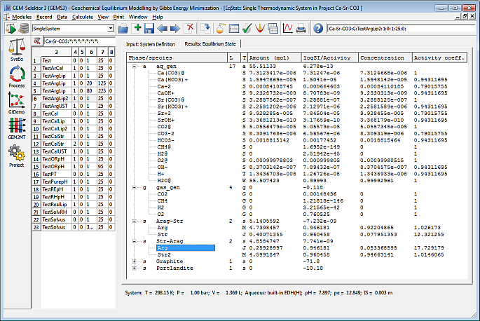

GEM-Selektor v.3 may appear on desktop like this (click
here to see a full-size image).
This image shows the main GEM-Selektor window with the list of Process
records and plotted simulation results for one of them. Such a simulation
is, in fact, a sequence of steps, each being a single calculation of the
equilibrium state.
In GEM-Selektor v.3, there is a dedicated dialog for single-system equilibrium calculations, such as shown below (click here for a full-size image).
Please, note that in actual releases of the program package,
or on different OS desktops, some details of GUI windows and dialogs
may look different or be re-designed. Screen
images in this tutorial were made from a Windows 7 with a
full-HD graphical resolution monitor.
In the actual version of default chemical thermodynamic
database, more phases than shown in the screenshots may be present;
some phases or species may appear under modified names.
Next Page
Creating a project to model solid solution - aqueous solution systems
Using "Process Simulator" to plot speciation and solubility diagrams
Examining the calculated equilibrium partitioning and surface speciation
{kind=link}
{kind=link}